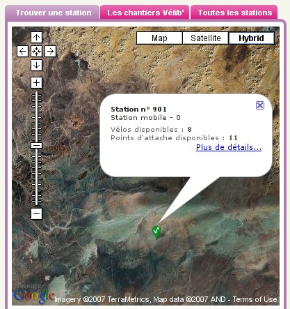

Jusqu'au bout du monde
20 août 2007
Vélib, comme une main tendue vers les zones les plus reculées ? Alors que d’aucuns banlieusards grincheux pestent contre l’absence de stations de l’autre côté du périphérique, les stations mobiles s’évadent vers les steppes les plus reculées. S’agit-il de l’Atlas, des Andes, de l’Afghanistan ? Mystère… En tout cas ils ont dû sacrément pédaler pour arriver là !

Le lien : http://www.velib.paris.fr/service/viewstation/901
En fait les stations 901, 902, 904, 11011, 14107, et 14108 ne sont pas géolocalisées.